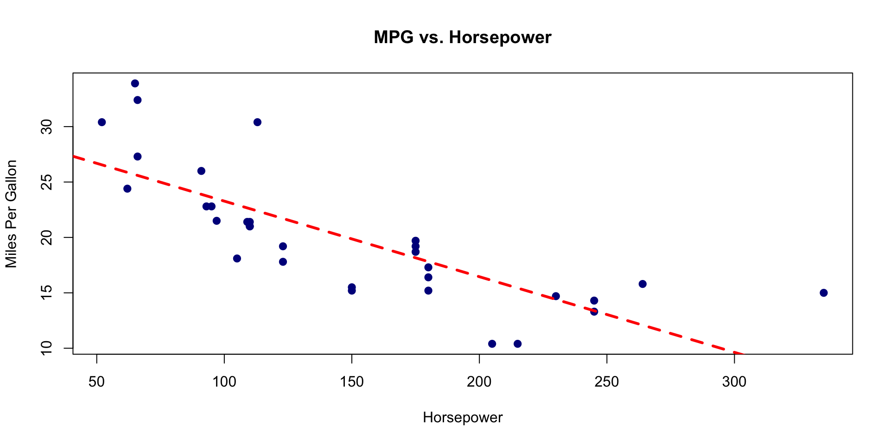
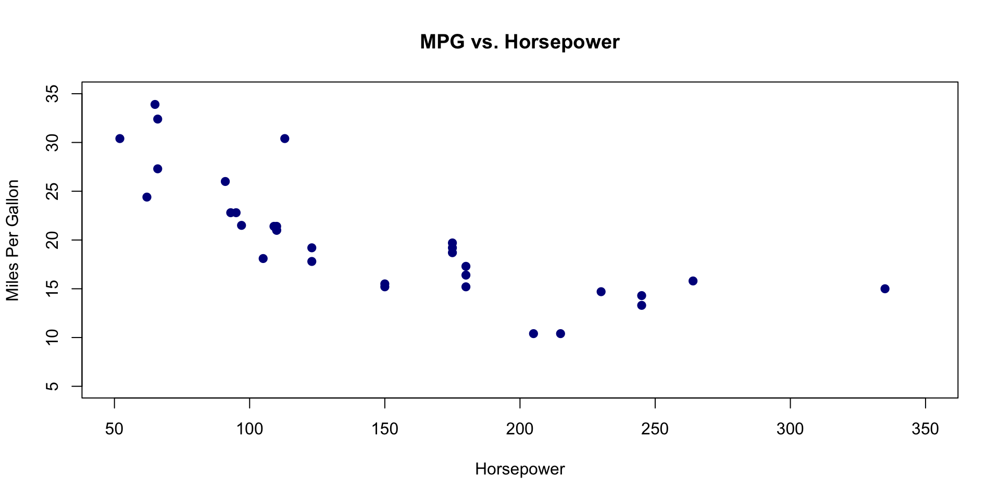
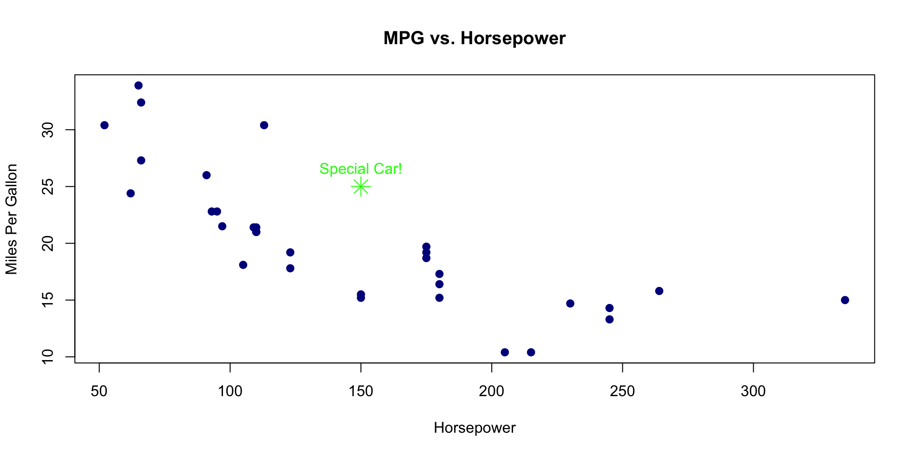
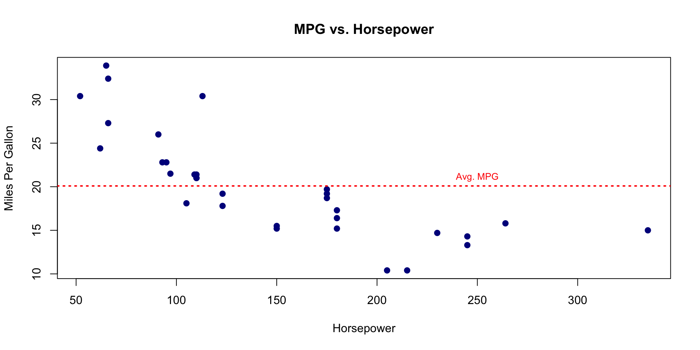
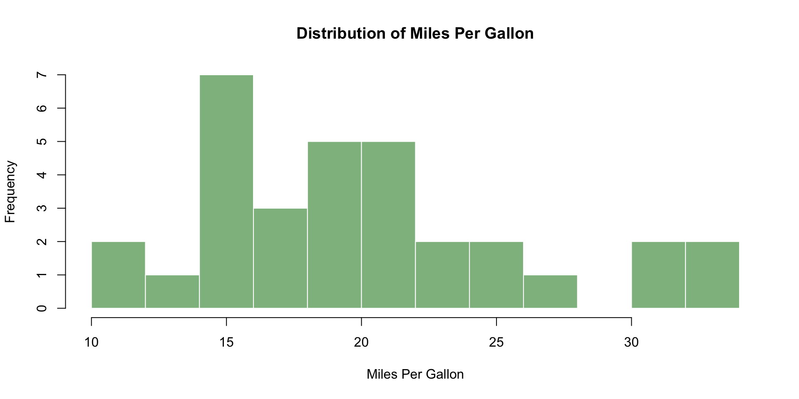
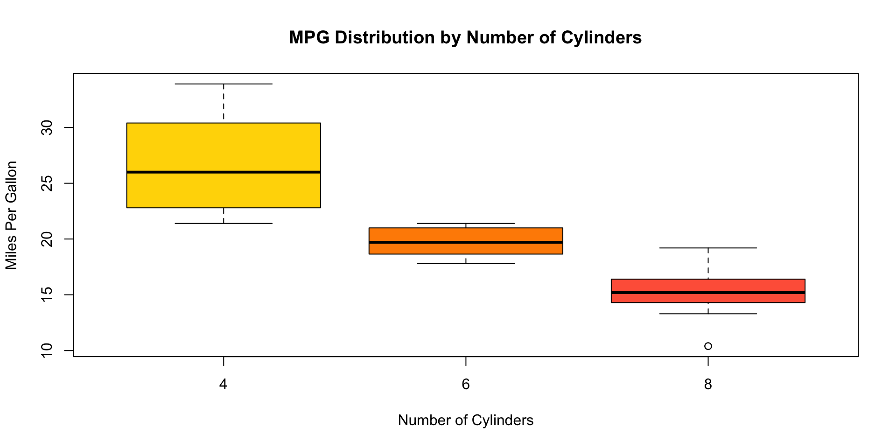
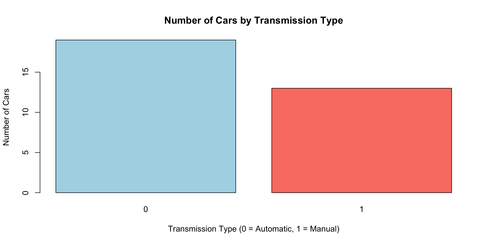
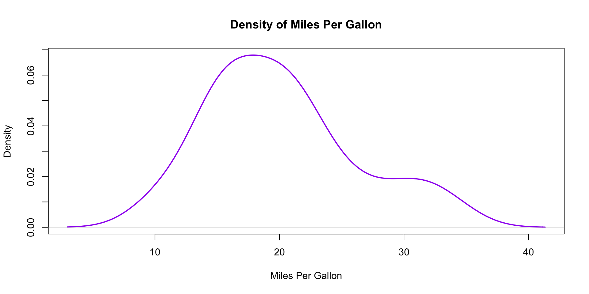
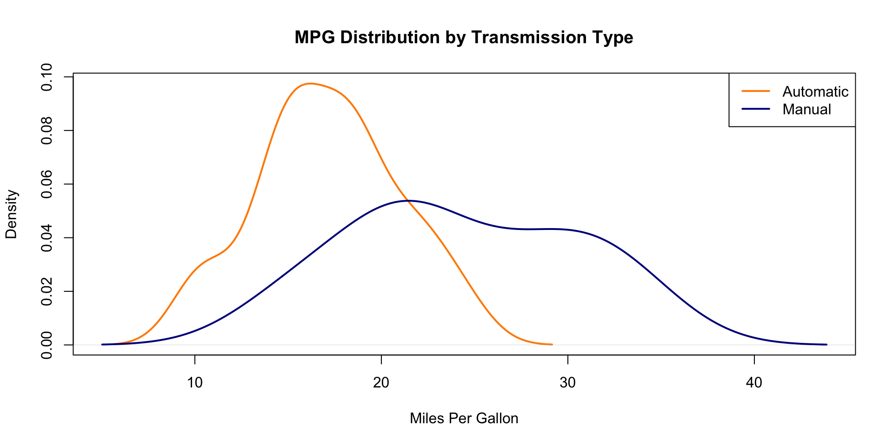
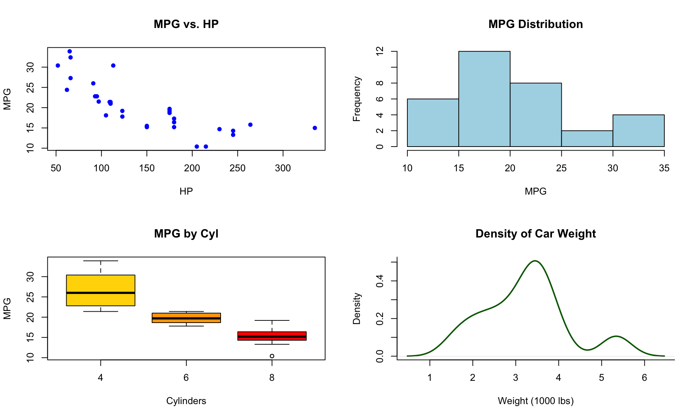

PSY6422 - Data Management & Visualisation
Basic Graphs Using Base R
Attendance Check-In Code
Enter the attendance code for today’s seminar to log your attendance.
You can log your attendance on iSheffield
Why Build Graphs in Base R?
Base R is useful when you want a quick exploration of your data and a simple plot. It doesn’t require any additional packages and it helps with understanding fundamental plotting concepts.
You can think of Base R as learning the fundamentals of R coding before moving to more advanced tools.
Base R Graphics
Base R offers a simple, yet powerful set of functions to create plots.
The most fundamental function is plot(), which is a generic function. Its behaviour changes depending on the type of arguments passed to it.
Plotting Parameters
Many visual aspects of plots are controlled by graphical parameters. These can be set temporarily for a single plot, or globally using par(). We will see some examples of this as we go through the lecture.
Common Base R Plot Types
Today we will look at some common base R plot types: Scatter plots, histograms, box plots, bar plots, and density plots.
With these plots, the function often changes based on the type of plot you want, but the parameters for customisation are similar.
Customising Plots
Many plotting parameters are common across different plot() functions. We will talk about some of the ones you can expect to see in the coming examples.
Customising Titles and Axis Labels
These arguments are essential for any good graph:
main: Main title of the plotxlab: Label for x-axisylab: Label for y-axis
Customising Point Appearance (plot())
These arguments control how individual points look in scatter plots:
pch: Plotting CHharacter (shape of points)- Values 0-25 are common. 16 is a solid circle
- There are many options available
cex: Character EXpansion (size of points)- Magnification factor relative to default (e.g.,
1.2is 20% larger)
- Magnification factor relative to default (e.g.,
Customising Line Appearance (abline(), lines())
These arguments control how lines look. They are useful for regression lines, borders, or custom lines.
lty: Line TYpe1= solid,2= dashed;3= dotted;4= dotdash;5= longdash,6= twodash
lwd: Line WiDth (size of points)- Magnification factor relative to default (e.g.,
2is twice as thick)
- Magnification factor relative to default (e.g.,
Customising Colours (col, border)
col is a very common argument used for many elements
col: Specifies the COLour of pointsborder: Sets the border colour- This is specific to bar plots and histograms
R understands many named colours (e.g., "red", "blue", "darkgreen")
- Extensive list of R colours
- Can also use hexadecimal codes (e.g.,
"FF0000"for red) for precise control
Customising Axes and Limits
You can control the range of the x and y axes
xlim: A two-element vectorc(min, max)for the x-axis rangeylim: A two-element vectorc(min, max)for the y-axis range
Note: If a data point falls outside these limits, it won’t be plotted.
Adding Elements to an Existing Plot
Base R builds plots layer by layer. Once you create a plot with plot(), you can add more elements to it using other functions
abline(): Add straight lines (horizontal, vertical, or from a linear model)points(): Add points to an existing plotlines(): Add lines connecting pointstext(): Add text labels at specific coordinateslegend(): Add a legend
Multi-Panel Plots (par(mfrow) or par(mfcol))
With Base R you can plot multiple plots within the same window:
mfrow = c(rows, cols): Fills the plot panels by rowmfcol = c(rows, cols): Fills the plot panels by column
Important: Remember to reset par() after creating multi-panel plots, or it will affect subsequent plots. The default is: par(mfrow = c(1,1))
Some Examples
Follow Along
For today’s lecture, follow along using the shell script on Blackboard entitled Week3_Part1_ClassShell.R.
Example: mtcars
To explore graphs in Base R, we will use the built-in dataset mtcars. This dataset contains information about various car models. There are 11 variables, but we will focus on these:
- mpg: miles per gallon (continuous)
- hp: horsepower (continuous)
- cyl: number of cylinders (categorical ,numeric)
- am: transmission (categorical; 0 = automatic, 1 = manual)
Loading Built-In Dataset
We will start by clearing our workspace and loading a dataset
mpg cyl disp hp drat wt qsec vs am gear carb
Mazda RX4 21.0 6 160 110 3.90 2.620 16.46 0 1 4 4
Mazda RX4 Wag 21.0 6 160 110 3.90 2.875 17.02 0 1 4 4
Datsun 710 22.8 4 108 93 3.85 2.320 18.61 1 1 4 1
Hornet 4 Drive 21.4 6 258 110 3.08 3.215 19.44 1 0 3 1
Hornet Sportabout 18.7 8 360 175 3.15 3.440 17.02 0 0 3 2
Valiant 18.1 6 225 105 2.76 3.460 20.22 1 0 3 1Summary of mtcars
Ask R for a summary of the data
mpg cyl disp hp
Min. :10.40 Min. :4.000 Min. : 71.1 Min. : 52.0
1st Qu.:15.43 1st Qu.:4.000 1st Qu.:120.8 1st Qu.: 96.5
Median :19.20 Median :6.000 Median :196.3 Median :123.0
Mean :20.09 Mean :6.188 Mean :230.7 Mean :146.7
3rd Qu.:22.80 3rd Qu.:8.000 3rd Qu.:326.0 3rd Qu.:180.0
Max. :33.90 Max. :8.000 Max. :472.0 Max. :335.0
drat wt qsec vs
Min. :2.760 Min. :1.513 Min. :14.50 Min. :0.0000
1st Qu.:3.080 1st Qu.:2.581 1st Qu.:16.89 1st Qu.:0.0000
Median :3.695 Median :3.325 Median :17.71 Median :0.0000
Mean :3.597 Mean :3.217 Mean :17.85 Mean :0.4375
3rd Qu.:3.920 3rd Qu.:3.610 3rd Qu.:18.90 3rd Qu.:1.0000
Max. :4.930 Max. :5.424 Max. :22.90 Max. :1.0000
am gear carb
Min. :0.0000 Min. :3.000 Min. :1.000
1st Qu.:0.0000 1st Qu.:3.000 1st Qu.:2.000
Median :0.0000 Median :4.000 Median :2.000
Mean :0.4062 Mean :3.688 Mean :2.812
3rd Qu.:1.0000 3rd Qu.:4.000 3rd Qu.:4.000
Max. :1.0000 Max. :5.000 Max. :8.000 Base R Scatter Plot
Recall that scatter plots show the relationship between two variables. Let’s look at miles per gallon (mpg) and horsepower (hp)
Base R Scatter Plot
plot(mtcars$hp, mtcars$mpg,
main = "MPG vs. Horsepower",
xlab = "Horsepower",
ylab = "Miles Per Gallon",
pch = 16, # Solid circles
col = "darkblue", # Dark blue colour
cex = 1.2) # Larger points
# Add a simple linear regression line to show the trend
model <- lm(mpg ~ hp, data = mtcars)
abline(model, col = "red", lwd = 3, lty = 2) # Red, thicker, dashed line
Base R Scatter Plot
plot() will specify that you want a scatter plot. We first specify the two variables within our dataset that we wish to plot.
plot(mtcars$hp, mtcars$mpg,
main = "MPG vs. Horsepower",
xlab = "Horsepower",
ylab = "Miles Per Gallon",
pch = 16, # Solid circles
col = "darkblue", # Dark blue colour
cex = 1.2) # Larger points
# Add a simple linear regression line to show the trend
model <- lm(mpg ~ hp, data = mtcars)
abline(model, col = "red", lwd = 3, lty = 2) # Red, thicker, dashed lineBase R Scatter Plot
With main, xlab, and ylab we specify our plot title, x-axis label and y-axis label, respectively. Notice we are still working within the plot() parentheses.
plot(mtcars$hp, mtcars$mpg,
main = "MPG vs. Horsepower",
xlab = "Horsepower",
ylab = "Miles Per Gallon",
pch = 16, # Solid circles
col = "darkblue", # Dark blue colour
cex = 1.2) # Larger points
# Add a simple linear regression line to show the trend
model <- lm(mpg ~ hp, data = mtcars)
abline(model, col = "red", lwd = 3, lty = 2) # Red, thicker, dashed lineBase R Scatter Plot
pch is ‘plotting character’. Here, we chose 16 which is a solid circle.
plot(mtcars$hp, mtcars$mpg,
main = "MPG vs. Horsepower",
xlab = "Horsepower",
ylab = "Miles Per Gallon",
pch = 16, # Solid circles
col = "darkblue", # Dark blue colour
cex = 1.2) # Larger points
# Add a simple linear regression line to show the trend
model <- lm(mpg ~ hp, data = mtcars)
abline(model, col = "red", lwd = 3, lty = 2) # Red, thicker, dashed lineBase R Scatter Plot
col is where you specify the colour. Here, we chose "darkblue".
plot(mtcars$hp, mtcars$mpg,
main = "MPG vs. Horsepower",
xlab = "Horsepower",
ylab = "Miles Per Gallon",
pch = 16, # Solid circles
col = "darkblue", # Dark blue colour
cex = 1.2) # Larger points
# Add a simple linear regression line to show the trend
model <- lm(mpg ~ hp, data = mtcars)
abline(model, col = "red", lwd = 3, lty = 2) # Red, thicker, dashed lineBase R Scatter Plot
cex (character expansion) allows us to change the size of our points. Here we are setting it to 1.2 times the default size.
plot(mtcars$hp, mtcars$mpg,
main = "MPG vs. Horsepower",
xlab = "Horsepower",
ylab = "Miles Per Gallon",
pch = 16, # Solid circles
col = "darkblue", # Dark blue colour
cex = 1.2) # Larger points
# Add a simple linear regression line to show the trend
model <- lm(mpg ~ hp, data = mtcars)
abline(model, col = "red", lwd = 3, lty = 2) # Red, thicker, dashed lineBase R Scatter Plot
To add a regression line we first need to model the regression (which here we call model). We can use the function lm(), the base R function to fit linear regression models. mpg ~ hp reads as “miles per gallon is modelled as a function of horsepower”. We are trying to find a linear relationship where changes in horsepower explain changes in miles per gallon.
We are essentially calculating the “best fit” straight line by finding the slope and intercept of that line using the least squares method.
plot(mtcars$hp, mtcars$mpg,
main = "MPG vs. Horsepower",
xlab = "Horsepower",
ylab = "Miles Per Gallon",
pch = 16, # Solid circles
col = "darkblue", # Dark blue colour
cex = 1.2) # Larger points
# Add a simple linear regression line to show the trend
model <- lm(mpg ~ hp, data = mtcars)
abline(model, col = "red", lwd = 3, lty = 2) # Red, thicker, dashed lineBase R Scatter Plot
Now we use the base R graphics function abline() which allows us to add straight lines to an existing plot. When you pass an lm object (like model) to abline(), it automatically extracts the intercept and slope from that linear model and draws the corresponding regression line. We can use col to specify the colour of the line, lwd for line width and lty to specify the line type. A value of 2 corresponds to a dashed line.
plot(mtcars$hp, mtcars$mpg,
main = "MPG vs. Horsepower",
xlab = "Horsepower",
ylab = "Miles Per Gallon",
pch = 16, # Solid circles
col = "darkblue", # Dark blue colour
cex = 1.2) # Larger points
# Add a simple linear regression line to show the trend
model <- lm(mpg ~ hp, data = mtcars)
abline(model, col = "red", lwd = 3, lty = 2) # Red, thicker, dashed lineBase R Scatter Plot
Suppose we want to control the range of the x and y axes. We can set these using xlim and ylim. These both take two-element vectors.
Base R Scatter Plot

Base R Scatter Plot
Maybe we want to add and label a specific point. We can do this using points() and text().
plot(mtcars$hp, mtcars$mpg,
main = "MPG vs. Horsepower",
xlab = "Horsepower",
ylab = "Miles Per Gallon",
pch = 16,
col = "darkblue",
cex = 1.2)
# Add a specific point (e.g., a car with hp=150, mpg=25)
points(150, 25, col = "green", pch = 8, cex = 2) # Green star, larger
# Add text label for this point
text(150, 26.5, "Special Car!", col = "green", cex = 1.0)Base R Scatter Plot

Base R Scatter Plot
Now maybe we want to add a horizontal reference line at the mean. We can use abline() like we did to plot the regression line, but this time specify h for horizontal.
plot(mtcars$hp, mtcars$mpg,
main = "MPG vs. Horsepower",
xlab = "Horsepower",
ylab = "Miles Per Gallon",
pch = 16,
col = "darkblue",
cex = 1.2)
# Add a horizontal reference line at average MPG
abline(h = mean(mtcars$mpg), col = "red", lty = 3, lwd = 2)
text(250, mean(mtcars$mpg) + 1, "Avg. MPG", col = "red", cex = 0.8)Base R Scatter Plot

Base R Histogram
Recall that histograms show the distribution of a single, continuous variable. Let’s look at miles per gallon (mpg).
Base R Histogram

Base R Histogram
hist() will specify that you want a histogram. We first specify the variable within our dataset that we wish to plot.
Base R Histogram
With main and xlab, we specify our plot title and x-axis label, respectively. Notice we are still working within the hist() parentheses.
Base R Histogram
col and border let us specify the colour of the bars and the border around the bars, respectively.
Base R Histogram
breaks controls the number of bins in the graph (i.e., how the data is grouped).
Base R Histogram

Base R Box Plots
Box plots are useful when we want to spot outliers or compare a distribution of a continuous variable across different categories. Let’s compare miles per gallon (mpg) across different number of cylinders (cyl).
Base R Box Plots

Base R Box Plots
boxplot() will specify that you want box plots. The formula syntax is continuous_var ~ categorical_var.
Base R Box Plot
With main, xlab, and ylab we specify our plot title, x-axis label and y-axis label, respectively. col let’s you specify the colours. You should specify one colour for each box. Notice we are still working within the boxplot() parentheses.
Base R Box Plots
Each box shows the interquartile range (IQR), with the median line inside. The whiskers extend to 1.5 times the IQR. Points beyond this may be outliers.
Base R Bar Plots
Bar plots are useful for displaying counts or aggregated values (e.g., means) for categorical variables. Let’s look at number of cars by transmission type (am).
Base R Bar Plots
# Count occurrences of each transmission type
transmission_counts <- table(mtcars$am)
print(transmission_counts)
# Create a bar plot
barplot(transmission_counts,
main = "Number of Cars by Transmission Type",
xlab = "Transmission Type (0 = Automatic, 1 = Manual)",
ylab = "Number of Cars",
col = c("lightblue", "salmon"))
Base R Bar Plots
Before we can create a bar plot, we first need to summarise our data. We need to count the occurrences of each transmission type.
Base R Bar Plots
barplot() will specify that you want bar plots. We need to call transmission_counts, the object that we created, to count the occurrences of each transmission type.
Base R Bar Plots
With main, xlab, and ylab we specify our plot title, x-axis label and y-axis label, respectively. col let’s you specify the colours of the bars. You should specify one colour for each bar. Notice we are still working within the barplot() parentheses.
Base R Bar Plots

Base R Density Plots
Density plots are useful when we want to visualise the probability distribution of a continuous variable. These plots are smoother than histograms. Let’s look at miles per gallon (mpg).
Base R Density Plots
Density Plots
- Avoid bin selection issues that can change the appearance of a distribution
- Offer a continuous, fluid depiction of the data’s shape that’s easier to interpret
- Multiple plots can be overlaid to compare distributions
- Can more clearly show data with multiple peaks (modes)
- Focus on shape, not count
Histogram
- Useful when you need exact frequency or count
- For very small datasets where smoothing might over-interpret limited data
- When you want to view your data as it falls into specific bins
Base R Density Plots

Base R Density Plots
plot((density)) will specify that you want a density plot. We first specify the variable within our dataset that we wish to plot.
Base R Density Plots
With lwd we specify the line width for our simple density plot.
Base R Density Plots
Let’s overlay two density plots. We will compare mpg for cars with automatic (am = 0) vs. manual (am = 1) transmission.
First, we create the density object for each group.
Base R Density Plots
Now, we make the density plot for automatic cars. When you set the xlim you need to accommodate the wider plot. When you set ylim you need to accommodate the taller plot.
Base R Density Plots
Now, we use the lines() function to add the manual cars density curve.
Base R Density Plots
And to tell the reader what they are looking at, we can add a legend.
Base R Density Plots

Base R Multi-Panel Plots
We can use par() to arrange multiple plots in one window.
Base R Multi-Panel Plots
Base R Multi-Panel Plots
Base R Multi-Panel Plots
Base R Multi-Panel Plots

Base R Strengths and Weaknesses
Strengths
- Simple syntax for quick plots
- No external packages needed
- Direct control over many low-level plotting elements
- Can customise visualisations
Weaknesses
- A lot of syntax required for complex plots (many arguments)
- Less intuitive for adding multiple layers or grouping data
- Less aesthetically pleasing compared to modern packages
- Requires more manual adjustments for publication-quality graphics
Give it a try
Work through this week’s worksheet, which can be found on Blackboard.
Anything you don’t finish, should be completed for homework.
Burr PSY6422